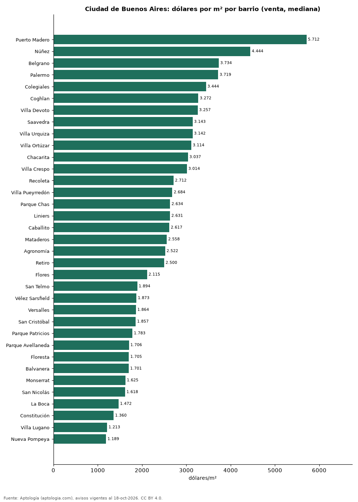

Precio de la vivienda por barrio en Ciudad de Buenos Aires: venta y arriendo en 46 barrios (octubre 2026)
Estudio con datos abiertos (CC BY 4.0). Versión original: https://github.com/elbroker/aptologia-datos/tree/main/estudios/precio-vivienda-buenos-aires-por-barrio-2026 · DOI: 10.5281/zenodo.23460788
El barrio con el metro cuadrado más caro de Ciudad de Buenos Aires es Puerto Madero, con USD 5.712 en la mediana de apartamentos en venta; el más barato de la muestra es Nueva Pompeya, con USD 1.189. En arriendo, el canon mediano más alto se pide en Caballito (1.200.000 pesos argentinos (USD 792) al mes) y el más bajo en Villa Lugano (680.000 pesos argentinos (USD 449)).
Resumen: analizamos 10.977 avisos de apartamentos en 46 barrios de Ciudad de Buenos Aires con 30 avisos o más.
Actualizado: 18 de octubre de 2026 (datos del 18 de octubre de 2026) · Próxima actualización: mensual.

Resumen
| Indicador | Valor |
|---|---|
| Más caro (venta por m²) | Puerto Madero: USD 5.712 |
| Más barato (venta por m²) | Nueva Pompeya: USD 1.189 |
| Ciudad de Buenos Aires (venta por m², mediana) | USD 2.558 |
| Arriendo más alto | Caballito: 1.200.000 pesos argentinos (USD 792) |
| Barrios | 46 |
Barrios de Ciudad de Buenos Aires
| Barrio | Venta: dólares por m² | Arriendo: pesos argentinos al mes | Avisos (venta / arriendo) |
|---|---|---|---|
| Puerto Madero | 5.712 | — | 114 / s. d. |
| Núñez | 4.444 | 1.150.000 | 123 / 75 |
| Belgrano | 3.734 | 1.150.000 | 653 / 162 |
| Palermo | 3.719 | 1.100.000 | 1.021 / 268 |
| Colegiales | 3.444 | 900.000 | 153 / 75 |
| Coghlan | 3.272 | 880.000 | 146 / 36 |
| Villa Devoto | 3.257 | 900.000 | 169 / 96 |
| Saavedra | 3.143 | 1.000.000 | 127 / 58 |
| Villa Urquiza | 3.142 | 1.100.000 | 154 / 106 |
| Villa Ortúzar | 3.114 | 900.000 | 137 / 34 |
| Chacarita | 3.037 | 750.000 | 128 / 42 |
| Villa Crespo | 3.014 | 1.050.000 | 154 / 91 |
| Recoleta | 2.712 | 1.000.000 | 341 / 181 |
| Villa Pueyrredón | 2.684 | 800.000 | 142 / 59 |
| Parque Chas | 2.634 | — | 102 / s. d. |
| Liniers | 2.631 | 740.000 | 156 / 66 |
| Caballito | 2.617 | 1.200.000 | 72 / 138 |
| Mataderos | 2.558 | 800.000 | 141 / 54 |
| Agronomía | 2.522 | — | 85 / s. d. |
| Retiro | 2.500 | 825.000 | 198 / 54 |
| Villa del Parque | 2.444 | 850.000 | 148 / 89 |
| Monte Castro | 2.442 | 800.000 | 129 / 40 |
| Villa Real | 2.405 | — | 51 / s. d. |
| Villa Luro | 2.387 | 780.000 | 145 / 68 |
| Parque Chacabuco | 2.357 | 850.000 | 155 / 57 |
| Boedo | 2.317 | 790.000 | 149 / 70 |
| Barracas | 2.285 | 910.000 | 152 / 60 |
| La Paternal | 2.171 | 790.000 | 136 / 37 |
| Almagro | 2.167 | 982.500 | 167 / 120 |
| Villa General Mitre | 2.128 | — | 35 / s. d. |
| Villa Santa Rita | 2.126 | — | 113 / s. d. |
| Flores | 2.115 | 890.000 | 195 / 124 |
| San Telmo | 1.894 | 850.000 | 161 / 60 |
| Vélez Sarsfield | 1.873 | — | 84 / s. d. |
| Versalles | 1.864 | — | 77 / s. d. |
| San Cristóbal | 1.857 | 715.000 | 159 / 74 |
| Parque Patricios | 1.783 | 730.000 | 141 / 36 |
| Parque Avellaneda | 1.706 | — | 106 / s. d. |
| Floresta | 1.705 | 700.000 | 159 / 75 |
| Balvanera | 1.701 | 800.000 | 471 / 157 |
| Monserrat | 1.625 | 790.000 | 192 / 63 |
| San Nicolás | 1.618 | 750.000 | 200 / 92 |
| La Boca | 1.472 | 700.000 | 124 / 31 |
| Constitución | 1.360 | — | 143 / s. d. |
| Villa Lugano | 1.213 | 680.000 | 113 / 61 |
| Nueva Pompeya | 1.189 | — | 47 / s. d. |
Medianas de apartamentos; — indica menos de 30 avisos. El canon es el mensual sin gastos comunes, condominio ni administración.
Preguntas frecuentes
¿Cuál es el barrio más caro de Ciudad de Buenos Aires? Puerto Madero, con USD 5.712 por m² en apartamentos en venta (octubre de 2026).
¿Dónde es más barato comprar apartamento en Ciudad de Buenos Aires? Entre los barrios con 30 avisos o más, en Nueva Pompeya: USD 1.189 por m².
¿Dónde es más caro arrendar en Ciudad de Buenos Aires? En Caballito, con un canon mediano de 1.200.000 pesos argentinos (USD 792) al mes.
Metodología
- Fuente: exportes nocturnos de la base de datos de Aptología (aptologia.com) del 18 de octubre de 2026: avisos vigentes de vivienda en portales inmobiliarios de 13 países, recogidos por Aptología y vistos en línea entre el 11 y el 18 de octubre de 2026. Corte: 18 de octubre de 2026.
- Depuración: se eliminan duplicados exactos (misma ciudad, zona, tipo, precio, moneda, área, habitaciones y baños) y los precios fuera del percentil 1–99 de cada país, operación, moneda y tipo; el precio por m² usa solo avisos con área declarada entre 12 y 2.000 m² y también se recorta al P1–P99.
- Qué se mide: precios pedidos (publicados), no precios de cierre. En arriendo, el canon mensual sin administración, gastos comunes ni condominio.
- Muestra mínima: cada cifra publicada se apoya en al menos 30 avisos; las celdas con menos se omiten.
- Monedas: nunca se mezclan avisos de monedas distintas sin convertirlos. Conversión a dólares con la tasa de mercado de ExchangeRate-API (open.er-api.com, actualización del 18 Oct 2026): 1 USD = 3.182,80 COP, 1 USD = 18,47 M.N, 1 USD = 5,09 BRL, 1 USD = 3,44 PEN, 1 USD = 982,44 CLP, 1 USD = 1.514,57 ARS, 1 USD = 40,20 UYU, 1 USD = 5.705,37 PYG, 1 USD = 61,27 DOP, 1 USD = 0,89 EUR, 1 USD = 11,72 BOB; la UF chilena a 41.178,64 CLP (mindicador,cl. 18-oct-2026). Los avisos publicados en dólares se usan tal cual.
- Monedas: Venta en dólares y arriendo en pesos argentinos, la moneda en que se publica la mayoría de los avisos de cada operación; los avisos en otra moneda se excluyen. Las equivalencias en dólares entre paréntesis usan la tasa citada.
- Limitaciones: la cobertura depende de los portales que recorre Aptología en cada país y es mayor en las ciudades grandes y en los segmentos medio-alto y alto; el área es la que declara el aviso, sin verificar; los nombres de zona vienen de los portales.
- Privacidad: solo se publican agregados; no se publica ningún dato personal, enlace a avisos ni nombre de anunciante.
- Datos abiertos: datos.csv, licencia CC BY 4.0.
Cómo citar
Pinzón Pineda, D. M. (2026). Precio de la vivienda por barrio en Ciudad de Buenos Aires: venta y arriendo en 46 barrios (octubre 2026). Aptología (aptologia.com). https://github.com/elbroker/aptologia-datos/tree/main/estudios/precio-vivienda-buenos-aires-por-barrio-2026. Datos: datos.csv, licencia CC BY 4.0.